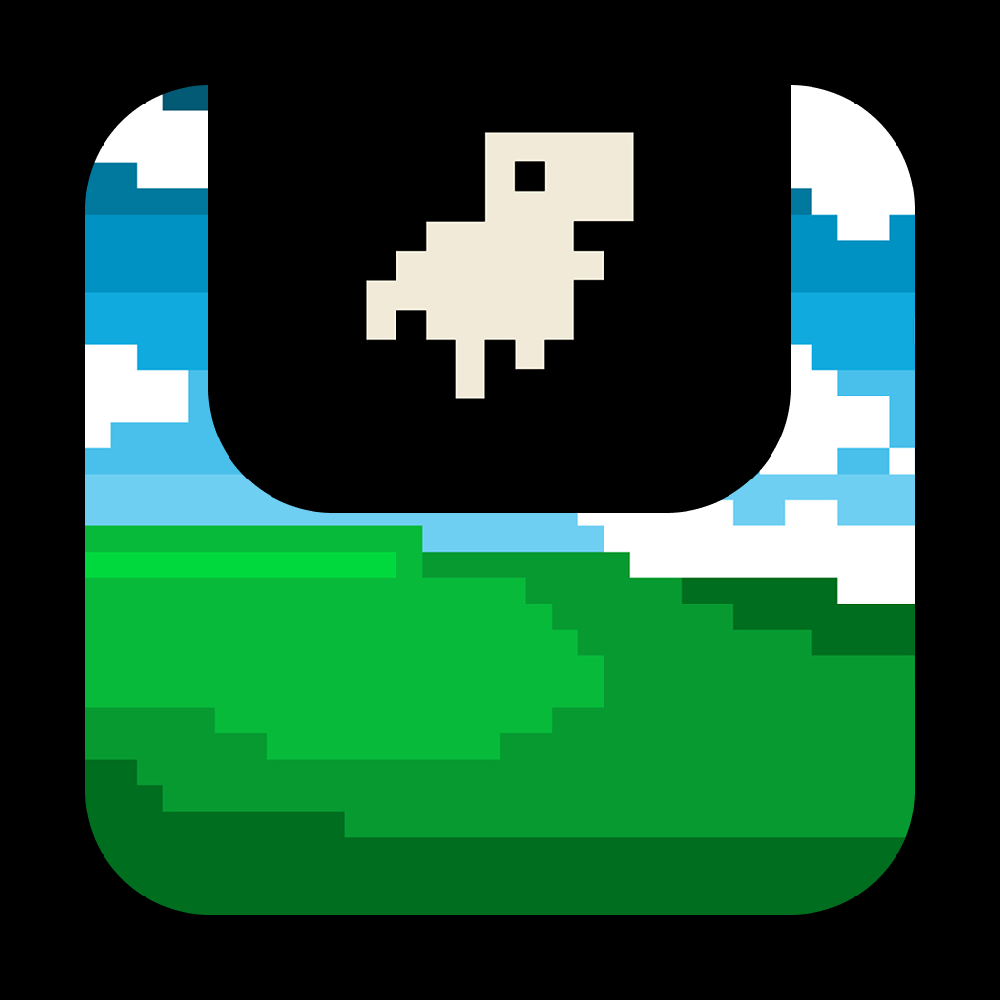

🔔
Quiet by default
Configurable system sounds for permission and completion events — or mute it entirely. English and 简体中文 built in.

NotchTune GitHubNotchTune turns your Mac's notch into a live control surface for your music and your terminal AI agents — playback, approvals, questions, and one-tap jump-back to the right session. Native. Local-first. Liquid glass.
Music when you're listening. Agents when they're working. A prompt the moment one needs you. The island morphs to whatever matters now — you never go looking.
NotchTune switches itself between music and agents, so the notch always shows the thing you need right now.
Control Spotify or Apple Music without leaving your work — artwork, scrubbable progress, shuffle, repeat, love, and volume, all inside a liquid-glass panel that lives where your eyes already are.
Watch your terminal-native coding agents live. The status dot tells you exactly where each one is — before you've even switched windows.
When an agent needs permission or has a question, the island grows into a notification panel right under the notch. Approve, deny, or answer in place — then it round-trips straight back to the process that asked.
Configurable system sounds for permission and completion events — or mute it entirely. English and 简体中文 built in.
One click returns focus to the exact terminal — Ghostty, iTerm2, WezTerm, tmux, Terminal.app, cmux, and more.
A real notch surface on MacBooks, and a clean top-center bar on external and non-notch displays. Same glass, anywhere.
A tiny pixel companion bounces out of the notch while it idles — and jumps when a session needs you. Choose the one that fits your setup.
The original. Sprints across your notch, tail high.
Cool and quiet — drifts gently while things are calm.
Sidesteps along the island, claws clacking.
Paddles past; flaps a wing when an agent moves.
A little friend for the Claude Code crowd.
NotchTune's liquid glass is yours to shape. Drag the controls — the island reacts live, right here on the page.
Render the island with Apple's Liquid Glass material instead of solid black.
Transparent, light-bending glass — the most “liquid” look.
Music-only widgets, AI-only monitors, plain utilities with flat gray boxes — they each leave something on the table.
| Feature | NotchTune | Music-only notch widgets |
AI-only agent monitors |
Plain notch utilities |
|---|---|---|---|---|
| Music playback & artwork | ✓ | ✓ | ✕ | ✕ |
| Live AI agent monitoring | ✓ | ✕ | ✓ | ✕ |
| Approvals & questions in the notch | ✓ | ✕ | partial | ✕ |
| Liquid glass interface | ✓ | ✕ | ✕ | ✕ |
| Characters & personalization | ✓ | ✕ | ✕ | themes |
| Local-first · no telemetry | ✓ | varies | varies | ✓ |
| Open source · free | ✓ | $$ | $$ | some |
Music and agents in one surface, every state covered, wrapped in glass — and it doesn't cost you anything.
Download the latest .dmg, drag it into Applications, and your notch starts earning its keep.
Unsigned for now: if macOS blocks the first launch, right-click NotchTune.app → Open. macOS 14+.